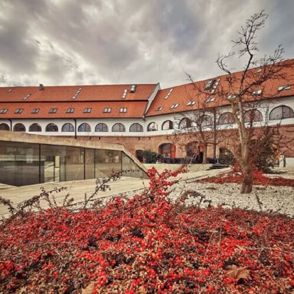

General information
Located in the central area of the city, more precisely between the Continental Hotel and the Cardinal Points Fountain, the Maria Theresia Bastion was built in the Baroque style between 1730 and 1735. It represents the largest preserved piece of wall from the old citadel of Timișoara. To allow the development of the city, all other bastions of the old citadel were demolished. In the past, its purpose was to defend the fortress. That is precisely why it is also known by the locals as Bastionul Cetății. Instead, today it is a passage for pedestrians and cars. Several restaurants, commercial spaces and exhibitions of the Banat Museum are also hosted here.
Gallery
"